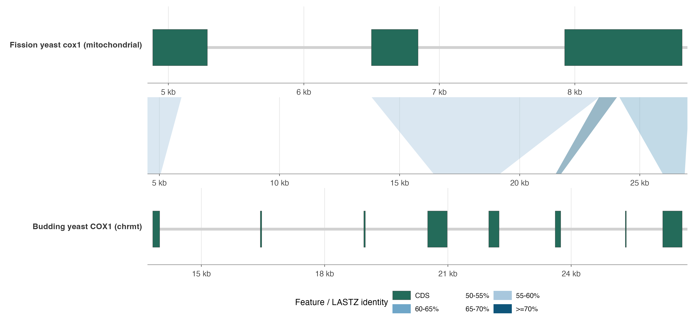

Overview
This tutorial compares mitochondrial cox1 in fission
yeast (Schizosaccharomyces pombe) with mitochondrial
COX1 in budding yeast (Saccharomyces cerevisiae
S288C). It is a compact counterpart to the CD44 pairwise alignment
tutorial, but the biological contrast is different: this is not an
alternative-splicing example. It shows conserved cytochrome c oxidase
subunit 1 coding sequence across different organellar intron
architectures.
The bundled dataset keeps one annotated protein-coding transcript per
species. PomBase annotates fission yeast cox1 with three
CDS blocks and two introns; SGD annotates budding yeast S288C
COX1 with eight CDS blocks and seven introns. The data are
bundled under inst/extdata/cox1_yeast_pairwise.
library(ggexon)
demo_dir <- system.file("extdata", "cox1_yeast_pairwise", package = "ggexon")
species <- read.delim(file.path(demo_dir, "cox1_species.tsv"), check.names = FALSE)
transcripts <- read.delim(file.path(demo_dir, "cox1_transcripts.tsv"), check.names = FALSE)
gene_table <- transcripts[, c(
"display_name", "scientific_name", "source_database", "gene_symbol",
"gene_id", "exon_count", "intron_count"
)]
names(gene_table) <- c("Species", "Scientific name", "Source", "Gene", "Gene ID", "CDS blocks", "Introns")
knitr::kable(gene_table)| Species | Scientific name | Source | Gene | Gene ID | CDS blocks | Introns |
|---|---|---|---|---|---|---|
| Fission yeast | Schizosaccharomyces pombe | PomBase | cox1 | SPMIT.01 | 3 | 2 |
| Budding yeast | Saccharomyces cerevisiae S288C | SGD | COX1 | Q0045 | 8 | 7 |
Pairwise mitochondrial plot
The plotting table has one row per CDS interval. The introns are visible as gaps on the transcript backbone. LASTZ links are computed from genomic mitochondrial DNA windows with 500 bp flanks around each gene.
exons <- read.delim(file.path(demo_dir, "cox1_plot_exons.tsv"), check.names = FALSE)
links <- read.delim(file.path(demo_dir, "cox1_nuclinks_lastz.tsv"), check.names = FALSE)
track_levels <- c("fission_yeast", "link_fission_budding", "budding_yeast")
track_labels <- c(
fission_yeast = sprintf("Fission yeast cox1 (%s)", species$chr[species$species == "fission_yeast"]),
link_fission_budding = "",
budding_yeast = sprintf("Budding yeast COX1 (%s)", species$chr[species$species == "budding_yeast"])
)
exons$track <- factor(exons$track, levels = track_levels)
links$track <- factor(links$track, levels = track_levels)
exons$exon_role <- factor(exons$exon_role, levels = "CDS")
identity_levels <- c("50-55%", "55-60%", "60-65%", "65-70%", ">=70%")
links$identity_bin <- factor(links$identity_bin, levels = identity_levels)
feature_palette <- c(CDS = "#246B5A")
identity_palette <- c(
"50-55%" = "#D5E3F0",
"55-60%" = "#A8C7DD",
"60-65%" = "#6FA6C8",
"65-70%" = "#2F7FAA",
">=70%" = "#0E557A"
)
ggexon() +
geom_nuclink(
data = links,
mapping = aes(
tspecies = tspecies,
tchr = tchr,
tstart = tstart,
tend = tend,
qspecies = qspecies,
qchr = qchr,
qstart = qstart,
qend = qend,
strand = strand,
group = group,
fill = identity_bin
),
colour = NA,
alpha = 0.42,
inherit.aes = FALSE
) +
geom_exon(
data = exons,
mapping = aes(
xmin = xmin,
xmax = xmax,
ymin = ymin,
transcripts = transcripts,
strand = strand,
track = track,
type = type,
fill = exon_role
),
exon_height = 0.52,
transcript_backbone_ratio = 0.08,
transcript_backbone_fill = "grey82",
transcript_backbone_colour = NA,
colour = "grey25",
linewidth = 0.12
) +
facet_genomics(
vars(track),
scales = "free_x",
ncol = 1,
link_panel_height = 0.38,
link_axis = "none",
link_strip = "blank",
annotation_axis = "bottom",
strip.position = "left",
labeller = ggplot2::as_labeller(track_labels)
) +
scale_fill_manual(
values = c(feature_palette, identity_palette),
breaks = c("CDS", identity_levels),
drop = FALSE,
name = "Feature / LASTZ identity"
) +
scale_x_continuous(
labels = function(x) paste0(round(x / 1000), " kb"),
expand = ggplot2::expansion(mult = c(0.01, 0.01))
) +
labs(x = "Mitochondrial genomic coordinate", y = NULL) +
theme_ggexon_track(
base_size = 8,
show_x_axis = TRUE,
show_x_grid = TRUE,
show_legend = TRUE
) +
theme(
panel.spacing.y = grid::unit(0.05, "lines"),
legend.position = "bottom",
legend.key.height = grid::unit(3, "mm"),
legend.key.width = grid::unit(6, "mm"),
plot.margin = margin(6, 8, 6, 6)
) +
ggplot2::guides(
fill = ggplot2::guide_legend(nrow = 2, byrow = TRUE, override.aes = list(alpha = 1))
) +
theme_ggexon_side_strips("left", base_size = 7.5)
Fission and budding yeast mitochondrial cox1/COX1 gene structures. CDS intervals are green, introns are represented by backbone gaps, and LASTZ genomic DNA alignment blocks are colored by percent-identity range.
What the alignment layer contributes
The nucleotide links are deliberately separate from the annotation rows:
- annotation rows describe CDS intervals and intron gaps from PomBase and SGD;
- link rows describe LASTZ genomic DNA alignment blocks and identity ranges;
-
facet_genomics()creates the middle panel and injects the source-panel coordinates used bygeom_nuclink().
homology_candidates <- read.delim(
file.path(demo_dir, "cox1_exon_homology_ranked.tsv"),
check.names = FALSE
)
summary_table <- data.frame(
Metric = c(
"Fission yeast CDS blocks",
"Budding yeast CDS blocks",
"LASTZ link blocks retained",
"Ranked exon-pair candidates",
"Reciprocal-best exon-pair candidates",
"Length-weighted LASTZ identity"
),
Value = c(
transcripts$exon_count[transcripts$species == "fission_yeast"],
transcripts$exon_count[transcripts$species == "budding_yeast"],
nrow(links),
nrow(homology_candidates),
sum(homology_candidates$reciprocal_best),
sprintf(
"%.1f%%",
weighted.mean(links$identity, links$alignment_length)
)
)
)
knitr::kable(summary_table)| Metric | Value |
|---|---|
| Fission yeast CDS blocks | 3 |
| Budding yeast CDS blocks | 8 |
| LASTZ link blocks retained | 4 |
| Ranked exon-pair candidates | 7 |
| Reciprocal-best exon-pair candidates | 3 |
| Length-weighted LASTZ identity | 59.6% |
The ranked exon-pair table is derived by intersecting retained LASTZ blocks with the CDS intervals on both tracks.
pair_table <- homology_candidates[, c(
"fission_exon_rank", "budding_exon_rank", "max_min_overlap_bp",
"max_link_identity", "reciprocal_best"
)]
names(pair_table) <- c("Fission CDS", "Budding CDS", "Shared overlap bp", "Max identity", "Reciprocal best")
knitr::kable(pair_table)| Fission CDS | Budding CDS | Shared overlap bp | Max identity | Reciprocal best |
|---|---|---|---|---|
| 1 | 1 | 169 | 59.036 | TRUE |
| 2 | 4 | 333 | 57.110 | TRUE |
| 2 | 5 | 252 | 57.110 | FALSE |
| 3 | 4 | 255 | 57.110 | FALSE |
| 3 | 5 | 252 | 57.110 | FALSE |
| 3 | 6 | 123 | 74.627 | FALSE |
| 3 | 8 | 464 | 64.351 | TRUE |
Data provenance
The dataset is generated by
data-raw/cox1_yeast_pairwise/build-cox1-yeast-demo.R. It
records the PomBase GFF3, PomBase mitochondrial FASTA, PomBase
pombe-cerevisiae-orthologs.tsv, SGD feature table, SGD
mitochondrial FASTA, their retrieval dates and exact MD5 checksums, and
a portable LASTZ command in cox1_provenance.tsv.